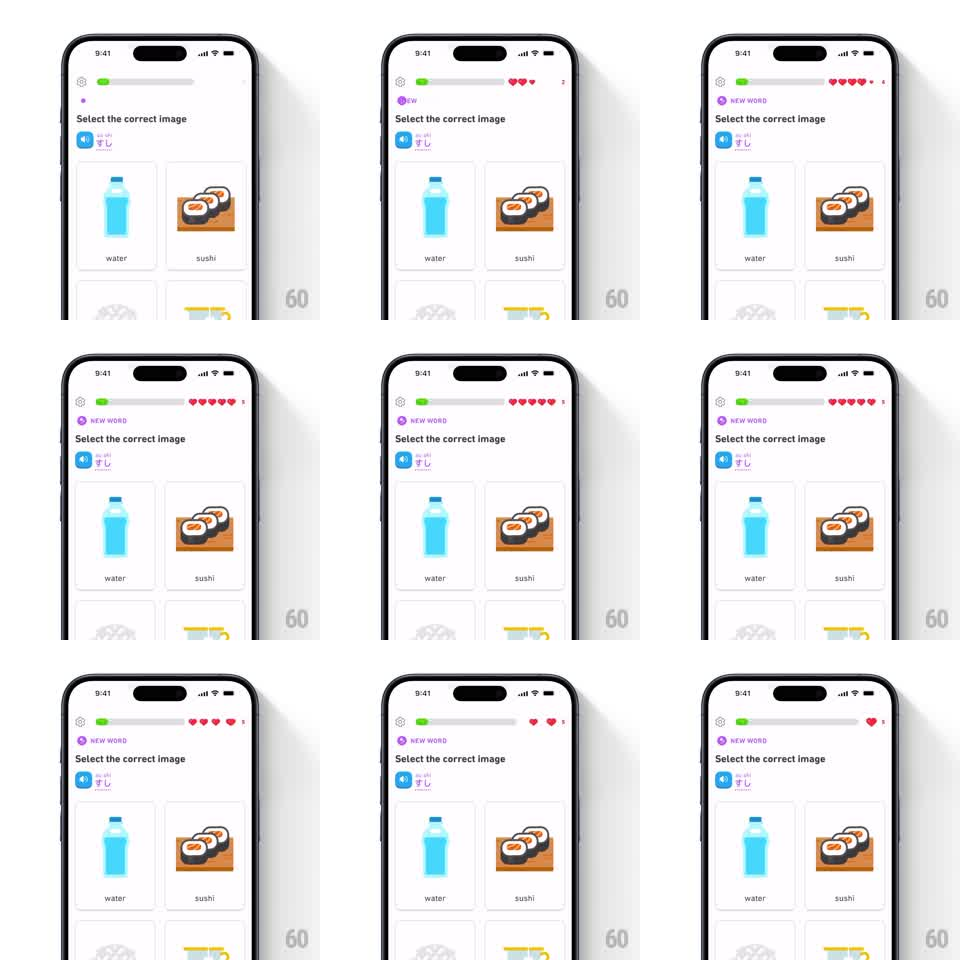

Media
Frame-by-frame

Rebuild this animation 1:1: Duolingo's hearts refill - heart icons arc up from the lesson into the header's heart row, each one landing with a bounce as the counter refills.

Rebuild this animation 1:1: Duolingo's hearts refill - heart icons arc up from the lesson into the header's heart row, each one landing with a bounce as the counter refills. ## Integration Integration: stack-agnostic spec - springs given as stiffness/damping, timed motions as duration + curve; map every value to your framework and animation library of choice. ## Scene A Duolingo "Select the correct image" lesson: progress bar top-left, a hearts counter top-right showing the current heart count, and below, the prompt with a speaker button and a 2x2 grid of illustrated image tiles (water bottle, sushi, and two greyed options). During the refill reward, red hearts fly one by one from mid-screen up into the header row, the heart count climbing back to full. ## Motion spec Pattern: flying hearts refill, ~1.5s for a full refill. - Each heart spawns at the reward point and launches along an upward arc (quadratic bezier to the counter's position, 450ms per heart, ease-in), shrinking slightly as it travels. - Hearts are staggered 250ms apart, each landing on the counter with a squash bounce (scale 1.3 to 1, spring stiffness 450 damping 15) as the row visibly gains that heart - the empty slot fills red. - The counter number ticks up on each landing, and the final heart triggers a small celebratory pulse of the whole hearts row (scale 1.1, 200ms). - The lesson content beneath stays completely still - only the flying hearts and the counter move. ## Calibration - Hearts are the same flat red heart glyph the header uses - the flying ones match what lands. - The arc paths vary slightly per heart so they read as a stream, not a conveyor. ## Reduced motion Counter updates with a single fade; no flying hearts. ## Don't miss - Each heart's landing is what increments the counter - count and icons always agree. - The refill tops out at the row's maximum; extra hearts never overflow it.